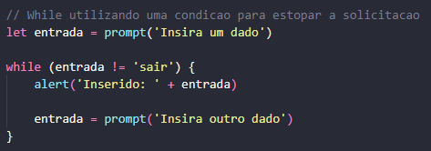

Sempre é utilizado com os seguintes parâmetros: início, condição e atualização.
for (início; condição; atualização)
No exemplo abaixo, utilizamos o for para realizar a contagem de 0 a 9 ou de 1 a 10. O resultado foi enviado ao console log.
Neste outro exemplo, utilizamos o break para interromper o loop ao tornar uma condição verdadeira. Solicitamos um número de 1 a 10, e o loop irá exibir uma contagem, iniciando em 1, até a contagem atingir o número digitado. O número digitado não será exibido.

E neste exemplo, utilizamos uma function para obter o mesmo resultado.

Abaixo podemos verificar a utilização do for com break e continue

É um ciclo que só para a sua execução quando uma única condição for verdadeira. No exemplo abaixo, foi definido que qualquer entrada diferente de 'sair' vai executar o código novamente. Perceba que a variável aqui deve ser uma let, pois irá mudar de valor a cada nova entrada do usuário.
Abaixo um outro exemplo utilizando o do... while. Repete uma condição até que outra seja verdadeira.

Um exemplo utilizando um gerador de números aleatório JS, que só para sua execução quando o usuário digita o número igual ao que foi gerado.

Um exemplo complexo de ciclos interdependentes.